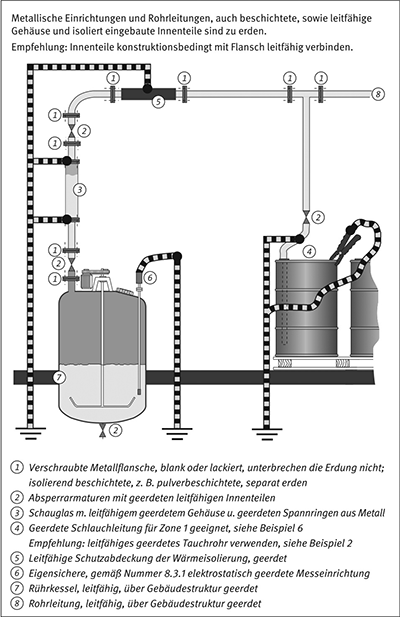

(1) Zur Vermeidung gefährlicher Aufladungen in explosionsgefährdeten Bereichen sind Personen sowie Gegenstände oder Einrichtungen aus leitfähigem oder ableitfähigem Material nach Nummer 3.1 zu erden bzw. mit Erdkontakt zu versehen. Entsprechendes gilt auch für leitfähige oder ableitfähige Medien, z. B. Flüssigkeiten oder Schüttgüter.
Hinweis 1:
Leitfähige Medien und Gegenstände können auf Grund ihres niedrigen Widerstandes geerdet werden.
Hinweis 2:
Ableitfähige Medien und Gegenstände besitzen einen Ableitwiderstand RE > 106 Ω und liegen somit oberhalb des Definitionsbereiches "„geerdet“". Deshalb spricht man hier von "„mit Erde verbinden"“.
Hinweis 3:
Elektrostatische Aufladungen leitfähiger isolierter Gegenstände bilden eine wesentliche Gefahrenquelle, da die gespeicherte Energie in einer Entladung zur Erde oder auf einen anderen leitfähigen geerdeten Gegenstand übergehen kann.
Hinweis 4:
Maßnahmen zur Erdung und zum Potenzialausgleich aus der Blitzschutz-Technik können zur elektrostatischen Erdung genutzt werden.
(2) Bestehen Einrichtungen aus mehreren leitfähigen Komponenten, sind diese einzeln zu erden oder untereinander elektrisch leitend zu verbinden und insgesamt zu erden.
(1) Im Allgemeinen soll der Ableitwiderstand 106 Ω nicht überschreiten. Ein Ableitwiderstand RE von 108 Ω reicht jedoch aus, wenn z. B. die Ladestromstärke I < 10-6 A und die Kapazität C < 100 pF betragen. Kleine Gegenstände gelten als elektrostatisch geerdet, wenn ihre Relaxationszeit 10-2 s unterschreitet.
Hinweis 1:
RE ist der Ableitwiderstand eines Gegenstandes zur Erde. Er beeinflusst entscheidend die Aufladung eines Gegenstandes und die Relaxation seiner Ladungen.
Hinweis 2:
Der Zusammenhang zwischen Potenzial, Ladestromstärke und Erdableitwiderstand wird in Anhang E erläutert.
Hinweis 3:
Leitfähige Gegenstände werden aufgeladen, wenn die Geschwindigkeit der Ladungsaufnahme die der Ladungsableitung überschreitet. Eine gefährliche zündwirksame Entladung tritt auf, wenn die elektrische Feldstärke die Durchschlagspannung der Atmosphäre überschreitet und die in der Entladung freiwerdende Energie gleich oder größer der Mindestzündenergie der vorliegenden explosionsfähigen Atmosphäre ist.
(2) In Bereichen, in denen mit besonders zünd- oder anzündempfindlichen Explosivstoffen umgegangen wird, darf der Ableitwiderstand von Gegenständen 105 Ω nicht überschreiten.
(3) Die Erdung und der Potenzialausgleich müssen zuverlässig und dauerhaft sein und den zu erwartenden Beanspruchungen, insbesondere durch Korrosion, standhalten.
(1) Ein Fußboden ist ableitfähig, wenn sein Ableitwiderstand 108 Ω unterschreitet. In explosionsgefährdeten Bereichen der Zonen 0, 1, 20 sowie in Zone 21 bei Stäuben mit MZE ≤ 10 mJ sind ableitfähige Fußböden erforderlich. Verschmutzungen, z. B. durch Farb- oder Ölreste oder ungewollte Isolierung, z. B. durch abgelegte Folien oder Leergut, sind zu vermeiden.
Hinweis:
Da zur Bestimmung des Ableitwiderstandes von Fußböden unterschiedliche Prüfnormen mit entsprechenden Prüfverfahren angewendet werden können, soll bereits vor der Lieferung und Verlegung von Fußbodenbelägen in der Ausschreibung auf das in der Abnahme anzuwendende Prüfverfahren und die einzuhaltenden Höchstwerte hingewiesen werden. Tabelle 19 in Anhang H gibt typische Erfahrungswerte für verschiedene Fußböden wieder.
(2) Bei geklebten Fußbodenbelägen ist auf die ausreichende Leitfähigkeit der verwendeten Klebstoffe zu achten.
(3) Bei nicht ausreichender Ableitfähigkeit des Fußbodens ist durch besondere Maßnahmen, z. B. durch Feuchthalten, dafür zu sorgen, dass der Ableitwiderstand 108 Ω unterschreitet.
(4) Durch Fußbodenpflegemittel darf der Widerstand nicht erhöht werden.
Hinweis:
Viele Fußbodenpflegemittel enthalten Wachse o. ä., um den Glanz zu erhöhen oder das Trocknen nach dem Wischen zu beschleunigen. Diese Wachse bilden oft einen isolierenden Film oder verändern die Feuchteaufnahme des Fußbodens.
(5) In Bereichen, die durch explosionsgefährliche Stoffe oder Gemische gefährdet sind, darf der Ableitwiderstand des Fußbodens 108 Ω nicht überschreiten.
(1) Meist wird mit der Energieversorgung eine Erdleitung verlegt. Darüber hinaus sind industrielle Anlagen normalerweise fest zusammengesetzt, z. B. durch Schraub- oder Schweißverbindungen, und der Ableitwiderstand beträgt bereits ohne zusätzliche Maßnahmen meist weniger als 106 Ω.
(2) Nur wenn diese Maßnahmen nicht ausreichen, sind zusätzliche Erdungsleitungen notwendig.
Eigensichere Betriebsmittel oder eigensichere Anlagen werden häufig betriebsbedingt erdfrei betrieben. In explosionsgefährdeten Bereichen sind dennoch leitfähige oder ableitfähige Gehäuse elektrostatisch zu erden. Können in explosionsgefährdeten Bereichen Teile der eigensicheren Schaltung, z. B. Sensorelektroden, berührt oder untereinander verbunden werden, z. B. über Steckverbindungen, ist die Schaltung elektrostatisch geerdet auszuführen. In diesem Fall genügt ein Ableitwiderstand RE ≤ 108 Ω.
Hinweis:
Zum Bestehen der Isolationsprüfung mit 500 V muss ein eigensicheres Betriebsmittel oder eine eigensichere Anlage einen Widerstand R ≥ 15 kΩ gegen Erde aufweisen.
Anlagenteile, die nicht mit der Gesamtanlage elektrisch leitend verbunden sind, z. B. flexible oder schwingungsfähige Bauteile, sind getrennt zu erden.
Hinweis:
Hierzu zählen z. B. Rohrleitungen mit isolierenden Zwischenstücken. Der Potenzialausgleich ist nur bei fehlendem metallischem Kontakt der einzelnen Rohrteile untereinander notwendig.

Ortsbewegliche metallische Gegenstände und Einrichtungen, z. B. Fässer, Container, Trichter, Kannen, Karren, werden im Allgemeinen nicht über die Gesamtanlage geerdet. Ihre Erdung erfolgt über eigene Erdungsanschlüsse. Insbesondere beim Füllen und Entleeren ist ein Ableitwiderstand RE < 106 Ω zu gewährleisten. Gegebenenfalls erfolgt die Erdung kleiner Gegenstände über Personen und den Fußboden.
(1) Die Erdung einer Anlage kann durch isolierende Komponenten, z. B. Dichtungen, oder durch isolierende Betriebsstoffe, z. B. Schmierfette, beeinträchtigt werden. Erfahrungsgemäß zeigen Öle und Fette in normaler Schmierfilmdicke, z. B. an rotierenden Wellen, Übergangswiderstände von nicht mehr als 103 Ω.
(2) Beim Einsatz isolierender Materialien, z. B. Zwischenstücke aus Kunststoff mit hohem Widerstand, sind die verbleibenden leitfähigen Komponenten untereinander zu verbinden und zu erden.
(3) Alternativ kann jedes AnlagenTeil für sich geerdet werden.
Hinweis 1:
In diesem Zusammenhang ist insbesondere auf von außen nicht sichtbare Teile zu achten, z. B. auf
Hinweis 2:
Bei zusammengesetzten Anlagenteilen ist gegebenenfalls eine Herstellerauskunft einzuholen.
(1) Leitfähige Gegenstände mit einer Kapazität C > 10 pF sind zu erden. Die Erdung darf nur entfallen, wenn gefährliche Aufladungen nicht auftreten.
(2) Leitfähige Gegenstände mit einer Kapazität unter 10 pF sind gemäß Tabelle 11 zu erden. Darüber hinaus sind kleine leitfähige Gegenstände zu erden
Hinweis 1:
Zu den typischen kleinen Gegenständen zählen z. B. Schrauben und Muttern bis M8. Blechschrauben besitzen in der Regel eine Kapazität C < 3 pF.
Hinweis 2:
Die Kapazität leitfähiger Teile wird von ihrer unmittelbaren Umgebung beeinflusst.
(3) Zur Beurteilung der Kapazität von Gegenständen ist ihre Kapazität im Einbauzustand, gegebenenfalls unter simulierten Bedingungen, zu bestimmen.
Hinweis:
Für leitfähige Flansche an Glasapparaturen sind die Werte nach Tabelle 8 in Nummer 4.13 heranzuziehen.
Tabelle 11: Höchstzulässige Kapazitäten ungeerdeter kleiner Gegenstände, sofern keine stark ladungserzeugenden Prozesse auftreten
| Explosionsfähige Atmosphäre erzeugt durch Gefahrstoffe der Explosionsgruppen | |||||
| I | IIA | IIB | IIC | III | |
| untertage | 10 pF | ||||
| Zone 0 | 3 pF | 3 pF | keine isolierten leitfähigen Gegenstände oder Materialien |
||
| Zone 1 | 6 pF | 3 pF | 3 pF | ||
| Zone 2 | – | – | – | ||
| Zone 20 oder 21 MZE < 10 mJ |
6 pF | ||||
| Zone 20 oder 21 MZE > 10 mJ |
10 pF | ||||
| Zone 22 | – | ||||
(1) Wenn in medizinisch genutzten Räumen explosionsgefährdete Bereiche vorliegen, sind Maßnahmen gegen elektrostatische Aufladungen erforderlich.
Hinweis 1:
Die Zündempfindlichkeit explosionsfähiger Gemische hängt stark von der Konzentration des Oxidatorgases im Oxidatorgas/Inertgas-Gemisch ab. Wird z. B. das explosionsfähige Gemisch aus einem brennbaren Gefahrstoff und mit Sauerstoff angereicherter Umgebungsluft gebildet, liegt die Mindestzündenergie dieses Gemisches deutlich unter der des nur mit Umgebungsluft gebildeten explosionsfähigen Gemisches.
Hinweis 2:
Explosionsgefährdete Bereiche können z. B. bei der Verwendung brennbarer Reinigungs- oder Desinfektionsmittel vorliegen.
(2) Zur Vermeidung von Aufladungen sollen Arbeitskleidung, Decken und Tücher unter den betriebsgemäß anzunehmenden Bedingungen ableitfähig sein.
(3) Decken, Tücher oder solche Gewebe und Gewirke, die nicht ableitfähig sind, sind auszuschließen, da sie bei Reibungs- und Trennungsvorgängen zu hohen Aufladungen führen können.
(4) Auch für typische Gegenstände und Einrichtungen in medizinischen Räumen, z. B. Gummitücher, -matratzen, -kopfkissen oder gepolsterte Sitze, gelten die Anforderungen der Nummer 3. Ableitfähige Überzüge isolierender Gegenstände haben diese vollständig zu umschließen.
(5) Abweichend von Nummer 3 dürfen als Abdeckung des Operationstisches und fahrbarer Krankentragen sowie der Sitzflächen von Hockern nur Gummi oder Kunststoffe mit Oberflächenwiderständen zwischen 5 · 104 Ω und 106 Ω verwendet werden.
(6) Der Ableitwiderstand des Fußbodens darf höchstens 108 Ω betragen. Bei Bodenbelägen, bei denen eine Erhöhung des Ableitwiderstandes während des Gebrauches nicht ausgeschlossen ist, darf der Ableitwiderstand im Neuzustand höchstens 107 Ω und nach vier Jahren höchstens 108 Ω betragen.
(7) Alle leitfähigen berührbaren Teile von Gegenständen oder Einrichtungen, auch die der ortsbeweglichen, müssen untereinander und mit dem Fußboden leitfähig verbunden und geerdet sein. Die Erdverbindung darf an keiner Stelle unterbrochen sein, z. B. durch isolierende Lackierung. Der Durchgangswiderstand von Reifen oder Rollen soll 104 Ω nicht überschreiten.
Hinweis:
Narkosegeräte, Hocker, Tritte, fahrbare Krankentragen und Ähnliches müssen durch Rollen bzw. Fußkappen aus leitfähigem Werkstoff mit dem Fußboden verbunden sein.
(8) In medizinisch genutzten Räumen mit explosionsgefährdeten Bereichen ist ableitfähiges Schuhwerk – einschließlich der Überschuhe – zu tragen. Jedoch soll ein Ableitwiderstand von 5 · 104 Ω nicht unterschritten werden.
(9) Schläuche für die Fortleitung von medizinischen Gasen, auch von Sauerstoff, Lachgas, Anästhesiegasen, dürfen abweichend von Nummer 5.6 aus isolierenden Materialien bestehen. Sind sie leitfähig, dürfen sie nur auf metallische Schlauchtüllen ohne isolierende Lackierung aufgezogen sein. Im Verlaufe der Gasführungen, auch innerhalb von Geräten, dürfen keine isolierten leitfähigen Teile vorhanden sein.
(10) Für Atembeutel und Bälge von Anästhesiegeräten und Sauerstoffbeatmungsgeräten sind ausschließlich leitfähige Werkstoffe zu verwenden.
Einrichtungen, die zur Erdung und zum Potenzialausgleich eingesetzt werden, dürfen nicht unterbrochen oder abgeschaltet werden. Sie sind eindeutig zu kennzeichnen, z. B. durch grün-/gelbgestreifte Farbgebung.
(1) Bereits in der Planungsphase einer Anlage oder einer Einrichtung sind Maßnahmen für die Erdung und für den Potenzialausgleich vorzusehen. Die Anzahl manuell zu handhabender Erdungsvorrichtungen, z. B. Erdungsklemmen, soll gering gehalten werden. Erdungsklemmen sind vor Arbeitsbeginn anzubringen und verbleiben am Ort, bis alle gefährlichen Aufladungen abgeleitet sind. Es sind Aufnahmevorrichtungen oder Ablagen für Erdungsklemmen vorzusehen.
(2) Einrichtungen zur Erdung und zum Potenzialausgleich sind so auszuführen und so zu erhalten, dass
(1) Für Arbeiten zur Erdung und zum Potenzialausgleich in explosionsgefährdeten Bereichen ist das Vorliegen einer eigenen Betriebsanweisung erforderlich.
Hinweis:
Siehe auch § 14 der Gefahrstoffverordnung.
(2) Personen, die in explosionsgefährdeten Bereichen arbeiten, müssen über die Notwendigkeit von Maßnahmen zur Erdung und zum Potenzialausgleich unterwiesen werden.
Hinweis:
Ziel der Unterweisung ist, dass die Beschäftigten, die zur Erdung und zum Potenzialausgleich vorgesehenen betrieblichen Einrichtungen kennen und bestimmungsgemäß anwenden können. Auf typische Erdungsfehler, z. B. nachträgliches Erden bereits aufgeladener Gegenstände oder Einrichtungen, ist besonders hinzuweisen.
(1) Die Prüfungen der Einrichtungen zur Erdung und zum Potenzialausgleich für die Vermeidung gefährlicher elektrostatischer Aufladungen sind unabhängig von anderen elektrischen Prüfungen durchzuführen.
(2) Art, Umfang und Fristen der Prüfungen sind gemäß der Technischen Regel TRBS 1201 Teil 1 festzulegen. Dabei sind Anlagen- und Bauwerksteile zu berücksichtigen, die neben ihrer eigentlichen Funktion auch andere erden und in den Potenzialausgleich einbeziehen, z. B. Schlauch und Zapfventil.
(3) Die Prüfungen sind durch zur Prüfung befähigte Personen gemäß Anhang 2 Abschnitt 3 Nummer 3.1 BetrSichV durchzuführen.